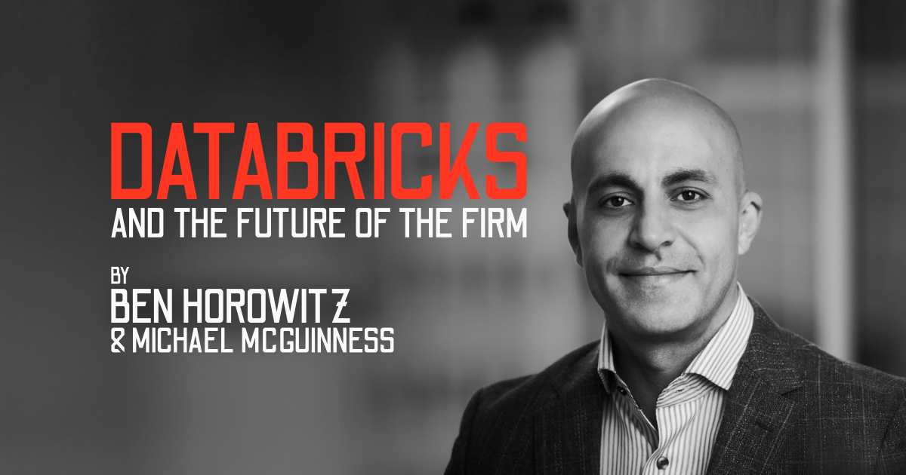
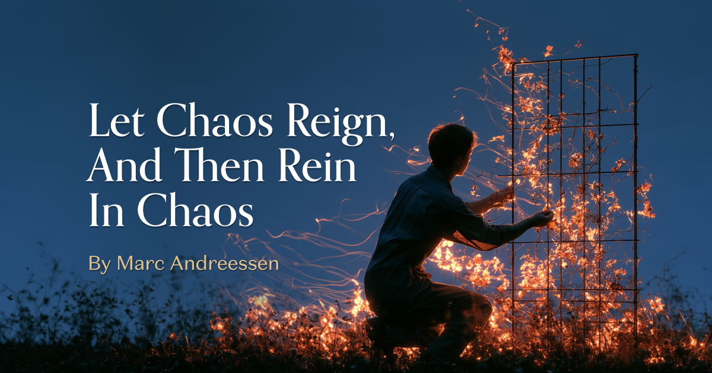
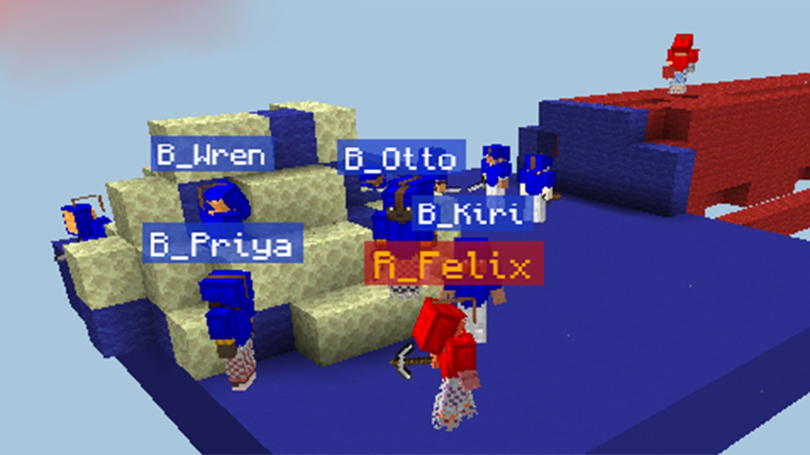
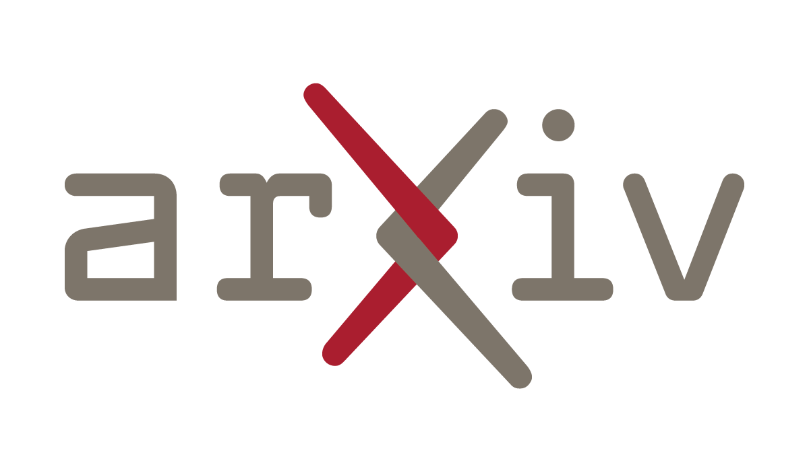
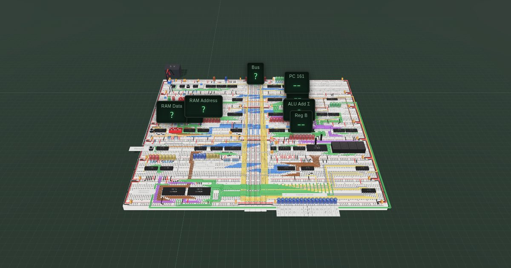
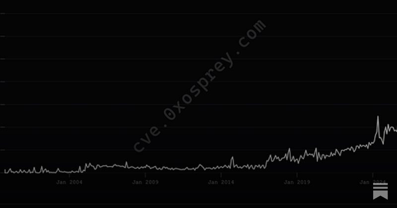
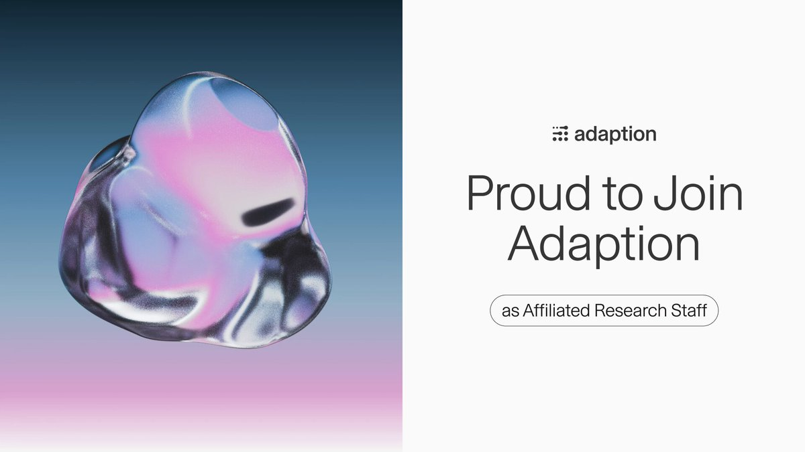
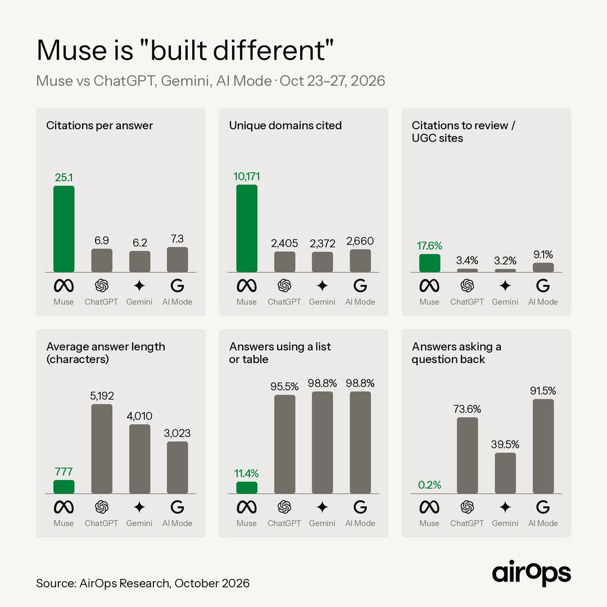

01
a16z 讨论 Databricks 与企业组织的未来

a16z 一篇围绕 Databricks 的文章讨论智能体和新数据库技术如何改变企业形态与日常工作。它属于组织层面的观点文章，并非新的产品公告。它补充了今日智能体报道所涉及的问题：信息系统与任务委派可能怎样影响工作结构，而不仅是单项操作速度。
每天一次，过滤 AI 噪音

a16z 一篇围绕 Databricks 的文章讨论智能体和新数据库技术如何改变企业形态与日常工作。它属于组织层面的观点文章，并非新的产品公告。它补充了今日智能体报道所涉及的问题：信息系统与任务委派可能怎样影响工作结构，而不仅是单项操作速度。

a16z 的《Let Chaos Reign, and Then Rein In Chaos》借 Replit 探讨自主运作公司的概念，将 AI 软件创作置于组织运行背景下。它是采集时间窗口内的观点文章，不代表公司已经能够无人监督运作。与今天的多智能体协调报道结合，可对照组织愿景与运行限制。
Jetstream Security 报道，巴西一家法院因诉讼文件中的提示注入处罚律师。这将 AI 安全问题带入司法文件处理流程，凸显使用语言模型的法律团队需要区分文档内容和指令。已收集的标题未给出具体处罚或法院论证。

Tom’s Hardware 报道，Minecraft 中由五十个 AI 智能体组成的团队在尝试建设文明时陷入官僚式协调，未能实现目标。这提醒人们，多智能体系统需要同时评估组织开销、协作和任务完成能力，不能仅依据单个模型的表现推断群体能力。

《Proving and Improving the Platonic Representation Hypothesis with JEPAs》在 Hacker News 和 Yann LeCun 分享的帖子中引发关注。本条保留原始论文来源，合并重复社交讨论。研究涉及表征学习与联合嵌入预测架构；理解结论时需要查看论文假设，不能将标题视为适用于所有模型和模态的普遍结论。

Nolan Lawson 关于 JavaScript 框架 AI 成本的文章在采集时获得 Hacker News 188 分和 126 条评论。这为框架选择增加了 AI 辅助开发维度。采集摘要没有包含测量结果，因此不能据此给出具体框架排名。

BBRouter 开发者介绍了带 MCP 连接的三维面包板模拟器，可让 AI 助手参与电路构建或故障排查。演示采用 Ben Eater 的八位计算机，并提供探测、时钟控制、原理图同步和实体搭建指导。这展示了助手接入结构化工程环境的方式，也便于在制作硬件前检查结果。

谷歌表示，DeepMind 团队使用由 Gemini 4 Argon 和 Antigravity 驱动的 AI 智能体，从零打造机器人。这个万圣节演示展示了智能体在文本和软件界面之外的应用，是公司展示而非通用机器人基准测试，但体现了智能体工作流与实体原型制作的结合。
Michael Black 引用了一项允许使用 MetaHuman Creator、MetaHuman Animator 和 Mesh to MetaHuman 输出训练 AI 的说明，并认为这有助于 AI 理解三维人体。对于使用合成人物数据的研究者，这是值得关注的训练数据方向；该帖并未提供完整许可条款分析。

Nathan Lambert 认为，开放模型和封闭模型都会被用于网络攻击，但不应将开放访问本身等同于网络犯罪的大幅增长。他指出攻击流程还有其他瓶颈。这是一种政策观点，并非新的事件报告或实测结果，可为模型访问与滥用风险讨论提供视角。

Sara Hooker 宣布 Yuntian Deng 加入 Adaption，参与塑造自适应界面研究方向。该帖明确了人员变动和研究主题，但没有发布模型或性能结果。这一方向关注界面如何适应用户与任务，也关系到人们与 AI 系统的互动方式。

Nathan Lambert 批评 Claude 等模型在涉及法律或医疗的问题上过度谨慎，认为这可能让回答偏离用户实际问题。这是可用性评价，并不构成取消防护措施的证据。其提出的设计难题是，如何在不确定性和后果都重要的场景中给出有帮助且边界清晰的回答。
可灵展示了一组使用 Kling 4.0 制作的动作镜头，强调打斗节奏、动作力度与镜头控制。该帖在采集时获得超过两千次点赞，是本批较受关注的创意 AI 内容。展示体现了其影视应用方向，但精选样例不能证明任意提示或生产条件下的稳定性。
Luma Labs 展示了更改广告视觉风格或地点，再适配不同格式和语言的工作流。重点是创意素材复用与变体制作，并非发布新基础模型。对于制作多个广告版本的团队，这是具体应用案例；短帖未提供成本、质量或交付速度测量。
Lightpanda 将其开源项目定位为面向 AI 和自动化的无头浏览器。该 Zig 仓库在采集时拥有 39,820 颗星，显示出开发者关注。它与需要访问网页内容的智能体基础设施相关；采集元数据无法证明兼容性或速度优势，采用前仍需结合实际工作负载评估。